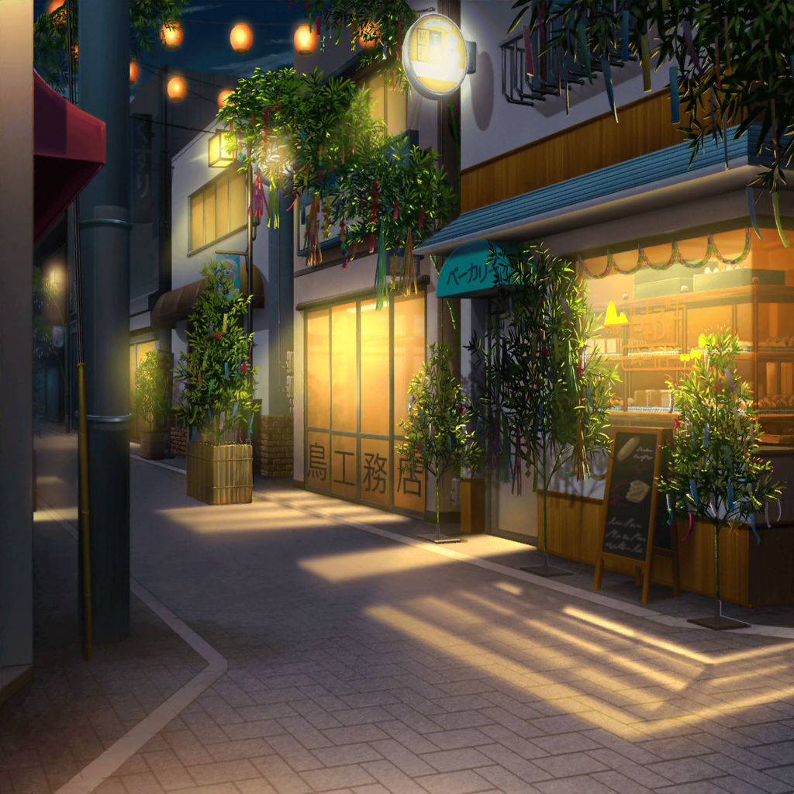

公園
日菜
えへへ、今日はすごくいい日になったから、
ぎゅいーんって、いい夢を見られそー
紗夜
いい日？
雨に降られるし、鳥に短冊を持って行かれるし、
散々だったじゃない
日菜
そんなことないよ！
おねーちゃんとも会えたし♪
紗夜
……偶然でしょ
日菜
偶然だっていーの！
日菜
……あ。そう考えると、あの鳥に感謝しなくちゃね。
鳥を追いかけたから、
こうやってふたりで過ごせることになったんだし！
紗夜
……
日菜
知ってる？ 七夕の日に雨が降った時は、
カササギっていう鳥が橋を作って、
織姫と彦星が会えるようにするんだよ
日菜
あの鳥は、あたしとおねーちゃんを会わせてくれたカササギかもね
紗夜
カササギ？
日菜
白黒の鳥なの。
サギってつくけど、カラスの仲間なんだよ
紗夜
そうなのね。
その話、はじめて知ったわ
日菜
この間、花咲川と羽丘との合同で、
天文部の部活動やった時にこころちゃんに教えてもらったんだ！
日菜
まあ、合同の部活動っていっても、
花咲川の部員はこころちゃんだけで、
羽丘の部員はあたしだけしかいないんだけどね
紗夜
日菜、天文部に入ってたのね
紗夜
（……そういえば、私……
日菜のことをほとんど知らないわ）
日菜
うん！ さっきも言ったとおり、部員はあたしだけだし、
天文部は『変人の住処』なんて言われて誰も
寄り付かないんだけどね
紗夜
……まあ、日菜が部員ならそうなるでしょうね
日菜
えー！ それ、どういう事ー！？
もう、おねーちゃんてば！
紗夜
……ふふっ
日菜
あっ、おねーちゃん笑った♪
紗夜
別に……私だって笑うことくらいあるわ
日菜
おねーちゃんが笑ったの、久しぶりに見た気がする！
それから……
日菜
おねーちゃんがあたしの話を聞いてくれたのも
久しぶりだよね。ありがとう
紗夜
そう、ね……
紗夜
……帰りましょう。
あまり遅くなるとお母さんも心配するわ
日菜
えへへっ。うんっ♪
紗夜
（こんな風に、日菜とたわいのない話をしたのは
いつぶりかしら。
……うまく話せないのはきっと……）
紗夜
（私の問題……なんだわ……）

商店街
日菜
わあっ……！
見て見ておねーちゃん！ ライトアップされてて
すっごくキレイ！
紗夜
本当だわ。
見慣れた商店街が、こんなに変わるなんて
日菜
だねっ！
あっ、屋台もでてる！ おいしそー♪
日菜
あの……おねーちゃん……
紗夜
……仕方ないわね。お母さんには私から連絡をいれるから。
ただし、あまり遅くなってはダメよ
日菜
やったあ！ ありがとう、おねーちゃん♪
日菜
何がいいかなっ？
おねーちゃん、何がいい？ 半分こしようよっ！
紗夜
私はあまり、屋台の食べ物は得意じゃないから……
日菜
あっ！ たこ焼きは？
これなら半分こしやすいよねっ？
紗夜
……ちょっと日菜、話を聞いてるの？
日菜
えへへっ。おねーちゃんとはんぶんこ♪
あたし、買ってくるねー！
紗夜
……本当に、仕方ないわね……